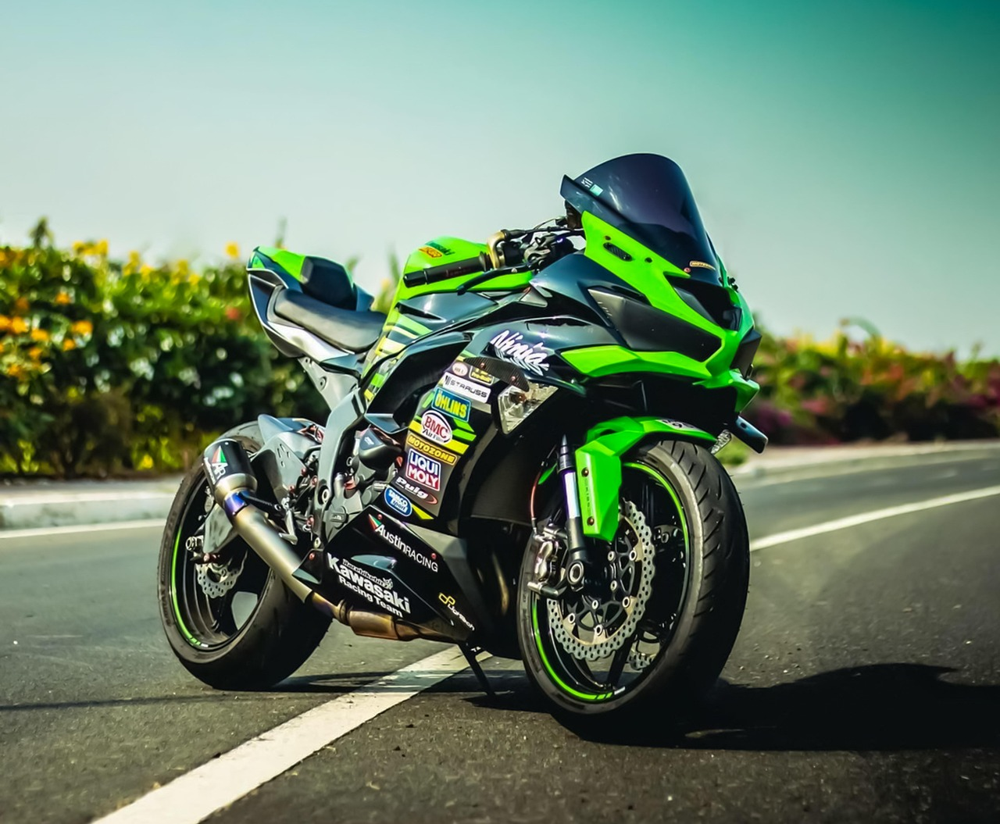
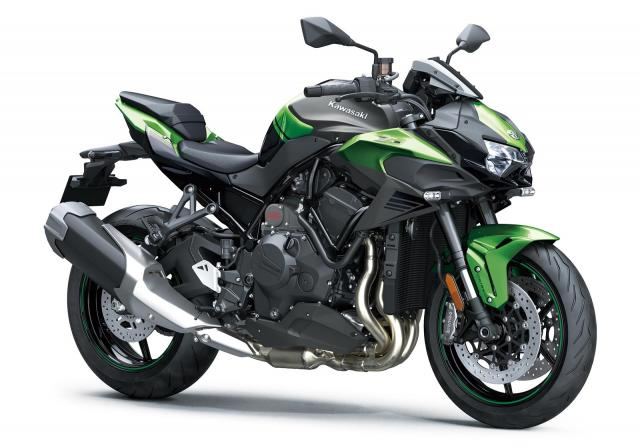
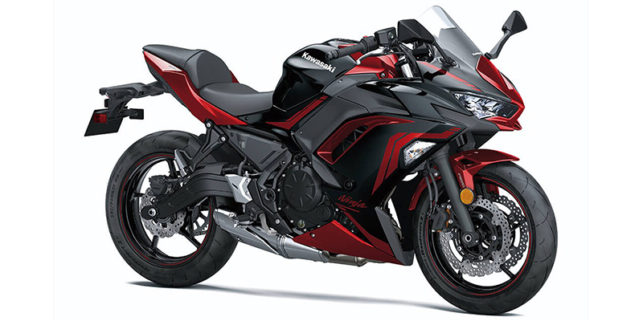

Ninja ZX-10R (2024)
Prix : À partir de 17 799 $ USD
Moteur : 998 cm³, 4 cylindres en ligne, refroidissement liquide
Description :
La Kawasaki Ninja ZX-10R 2024 est une hypersportive dérivée de la compétition WorldSBK. Dotée d’une technologie embarquée de pointe, elle offre un comportement précis, une puissance redoutable et un look agressif.
Z H2 (2024)
Prix : À partir de 18 500 $ USD
Moteur : 998 cm³, 4 cylindres en ligne suralimenté
Description :
Une naked bike suralimentée, musclée et bourrée de technologie. Sensations fortes garanties !
Versys 1000 LT (2024)

Prix : À partir de 14 000 $ USD
Moteur : 1043 cm³, 4 cylindres en ligne
Description :
Une grande routière confortable et technologique pour avaler les kilomètres avec aisance.
Ninja 650 (2024)
Prix : À partir de 7 999 $ USD
Moteur : 649 cm³, bicylindre en ligne
Description :
Une sportive accessible, idéale pour débuter ou profiter d’une conduite dynamique en ville comme sur route.
KX450 (2024)

Prix : À partir de 9 999 $ USD
Moteur : 449 cm³, monocylindre 4 temps
Description :
Une bête de course pour le motocross : puissance, agilité, légèreté et performances sans compromis.